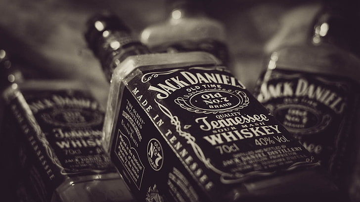

VIVA COLOMBIA, VIVA FALCAO

razones por las que el Blue Label a menudo es elogiado como un elixir
Mezcla Maestra: El Blue Label es una mezcla cuidadosamente elaborada de varios whiskies de malta y grano de distilerías selectas. Los Maestros Mezcladores de Johnnie Walker combinan hábilmente diferentes sabores y características para lograr un perfil de sabor único y equilibrado.- Calidad de los Ingredientes: Los whiskies utilizados en el Blue Label suelen ser de alta calidad y pueden incluir maltas y granos madurados durante largos períodos, lo que aporta complejidad y profundidad a la mezcla.
- Envejecimiento y Maduración: Parte del atractivo del Blue Label radica en su proceso de envejecimiento, donde los diferentes componentes de la mezcla se maduran en barricas de roble durante períodos prolongados. Esto permite que los sabores se mezclen y evolucionen con el tiempo, dando como resultado un producto final sofisticado.
- Sabor y Aromas Complejos: Los degustadores a menudo describen el Blue Label como un whisky con una amplia gama de sabores y aromas, que pueden incluir notas de frutas, especias, caramelo, nueces y ahumado. Su complejidad y capas de sabores contribuyen a su reputación.
- Presentación y Exclusividad: El empaque y la presentación del Blue Label también añaden a su aura de lujo y exclusividad. Suele presentarse en una botella elegante y etiquetado distintivo, lo que refuerza su estatus premium.
- Reconocimiento y Prestigio: Johnnie Walker es una marca icónica y reconocida en todo el mundo, con una historia rica en la producción de whisky escocés. El Blue Label se beneficia de esta reputación consolidada y del reconocimiento global de la marca.